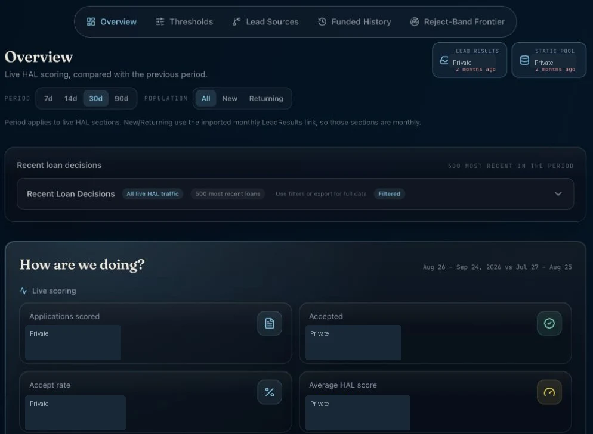
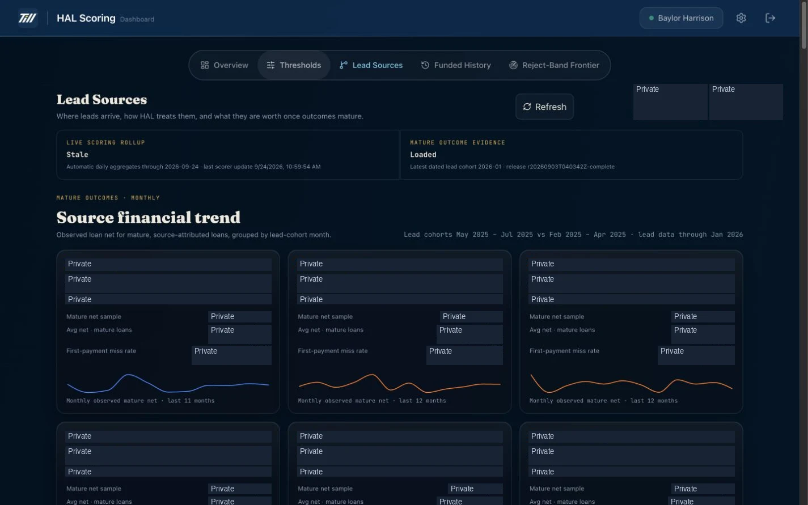

Financial services · Lending
A clearer view of lending decisions.
Machine-learning loan scoring and an operating dashboard for the lending workflow.

The live HAL overview brings scoring activity and decision reporting together. Private operating figures are redacted; no settings were changed.
The context
A problem worth solving.
Loan scoring needs to fit into an existing application process, while the team needs visibility into scoring activity and loan performance.
My contribution
What I brought to the work.
Built a machine-learning scoring service integrated with the lender’s application system, plus a dashboard for reviewing scoring activity, approval thresholds, lead sources and loan performance.
The product
What it makes possible.
01Scoring integration+
Receives application inputs and returns scoring results to the existing lending system.
02Operational visibility+
Brings scoring activity, policy thresholds, source information and historical performance into one dashboard.
03Business outcome+
The service saves $2,000 per month, equivalent to $24,000 annualized. The annualized figure expresses the monthly savings over twelve months.
At a glance / simplified product view
- 01Loan application
- 02Scoring service
- 03Decision & reporting
Inside the software
See the actual workspace.

Where it stands
The work keeps moving.
Keep scoring behavior, reporting and policy changes understandable as the lending workflow evolves.